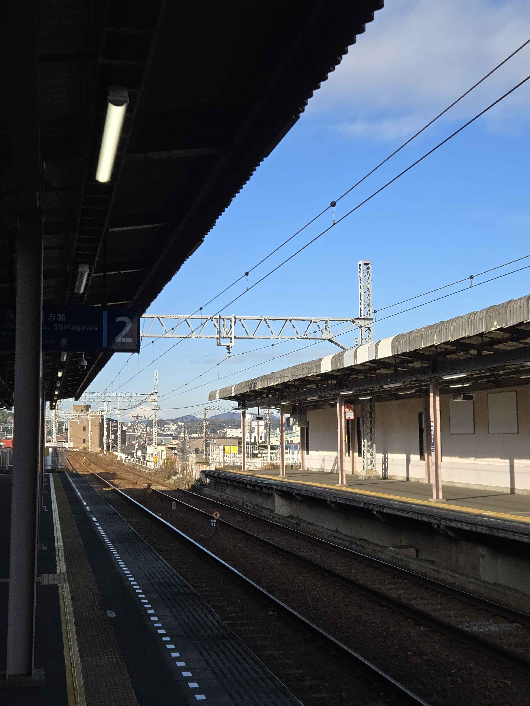
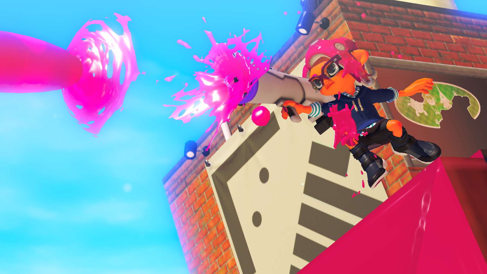

About me
I'm Jon, a college student about to graduate with a Bachelors in Computer Science. I've maintained a GPA above a 3.6 and have successfully completed the six month long Senior Capstone, working with a team including seven other students on creating a web application. After my time at Portland State University, I plan to move to the state of Washington to figure out my future plans. As I help out with my family I'll be working on my own personal projects and helping out friends with other technical projects. I'll be learning new programming languages, looking into different game engines, and flexing my creative muscles with some music writing.
A major part of my life has been my extended stay in Japan. It's has a massive impact on my life and how I see the world around me. Throughout high school and my college career I've had the luxury of seeing how other people around the world live their lives and observing firsthand several cultural differences that I deeply wish were more popular in America. Being able to live elsewhere has taught me a lot about the language barrier, current US culture, and led me to connections I never would have made otherwise had I not been given the privilege.

Hobbies
My hobbies center around video games mostly, and interacting with my friends while I play games or do other creative endeavors. I enjoy some of the typical popular games; Minecraft, Terraria, the up-and-coming game Deadlock, Deep Rock Galactic, but I also enjoy a lot of indie games as well. I especially enjoy roguelikes such as Crypt of the Necrodancer, Risk of Rain 2, The Binding of Isaac, Realm of the Mad God, and several others.
I enjoy the 8-bit sprite era of games, and thoroughly enjoy chiptune styled music. I make a lot of personal music through FLStudio and (a fork of) Famitracker, an application that replicates the technical limitations of old sound chips. Though I haven't been able to compose as much music as I've wanted due to my college workload, I consider myself a musician just as much as I would consider myself a programmer.

Tech and the Lack of Enthusiasm
With the overenthusiastic mentions of AI being the future, I find it dysmal as a college student looking for work. Not only are data centers leeches that poison the areas around them, but their intended output undermine a lot of what the human experience is all about. AI generated imagery contains none of the soul and artistry that goes into conveying the human experinece, and boils it all down into a set of parameters that are incomprehensible and entirely irredeemable by people who actually care.
AI "assisted" tools like Copilot and LLMs like Gemini and ChatGPT are hailed as the tools of the future, but they offset the workload of individuals and discourage deep thought. I have never once intentionally used an AI application unless it was strictly required to complete a homework assignment as requested by the professor. All of my work, regardless of the circumstances, was my own work and was a result of research and tools I looked for on my own.